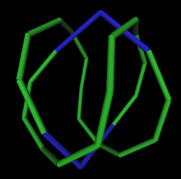

We have been looking for a way that the Pattern Knot may form within the 120 Polyhedron.
Here I look at one version of the Pattern Knot (constructed from 2 intersecting helices) and a particular orientation of the 120 Polyhedron. This suggests one way that the Pattern Knot relates to the 120 Polyhedron. Whether or not this is how the Pattern Knot is formed within the 120 Polyhedron is still being investigated.
Here are the intersecting helices.
Here is the 120 Polyhedron intersecting with the Pattern Knot.
The 120 Polyhedron has 3 different types of vertices. These types are defined by the distance from the center of volume of the 120 Polyhedron. We label the furthest most vertices from the center of volume the "A" vertices. The closest vertices to the center of volume are labeled "C" vertices. The vertices that are a distance between the furtherest and closest distances are labeled "B" vertices.
In this next picture, the 120 Polyhedron is "solid" and positioned so that an "A" vertex of the 120 Polyhedron is in the center of the figure and within the Pattern Knot.
Further, the 120 Polyhedron is so oriented as to have the Pattern Knot travel from a B vertex, through the A vertex and again through a B vertex. This also looks like the Pattern Knot is going from the "top" of a diamond to the "bottom" of a diamond, along the long face diagonal of the diamond.
Note also that the A vertex is positioned at that point in the Pattern Knot at which a "kink" occurs. Using the 2 intersecting helices method to create the Pattern Knot results in 2 knick in the resulting knot. The details of these kinks are given on this linked web page.
This completes the description of the orientation of the 120 Polyhedron and the Pattern Knot.
Let us see how well the Pattern Knot matches the edges of the 120 Polyhedron.....
I have made cylinders out of the closest edges of the 120 Polyhedron to the Pattern Knot.
It actually looks pretty good.
The blue cylinders indicate where the cylinder track seems to jump off of the 120 Polyhedron edges, focuses into an "A" vertex and then returns to follow the 120 Polyhedron edges.
Here are some figures without the helix Pattern Knot.
|  |
And some figures with the 120 Polyhedron....
The sequence of vertices which the Pattern Knot follows is:
Start with one of the 2 vertices between 2 blue tubes. That's an A vertex. The sequence is then
A,C,B,A,B,A,B,A,B,A,B,A,B,C,A,C,B,A,B,A,B,A,B,A,B,A,B,C,A
The first A is the same vertex as the last A. The A,C's and C,A's are the blue tubes. C,B's and B,C's are shorter than A,B tubes, but both color green.
Since the 120 Polyhedron has the same vertices as a rhombic Triacontshedron (the B vertices), we find that the BAB travels over the long face diagonal of the rhombic Triacontahedorn.
NOTE: The color scheme has changed in the following pictures.
Note that the long face diagonals of the rhombic Triacontahedron correspond to the edges of the Icosahedron.
Here is a unfolded "layout map" of the rhombic Triacontahedron and the knot.
The significance of all this is not known.